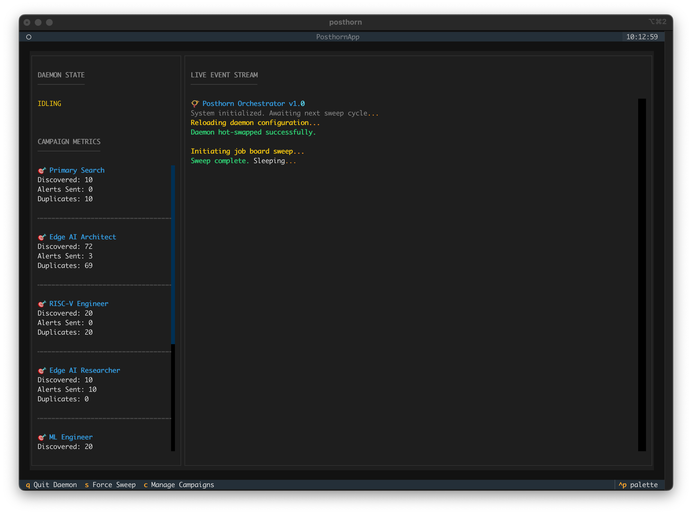
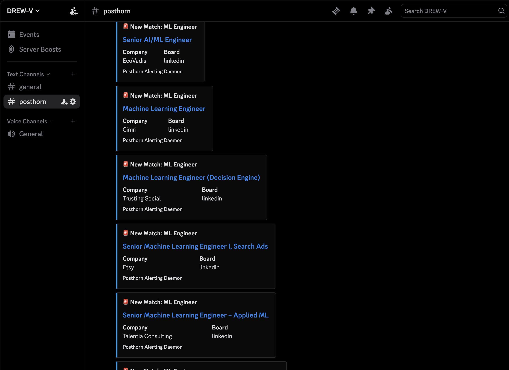
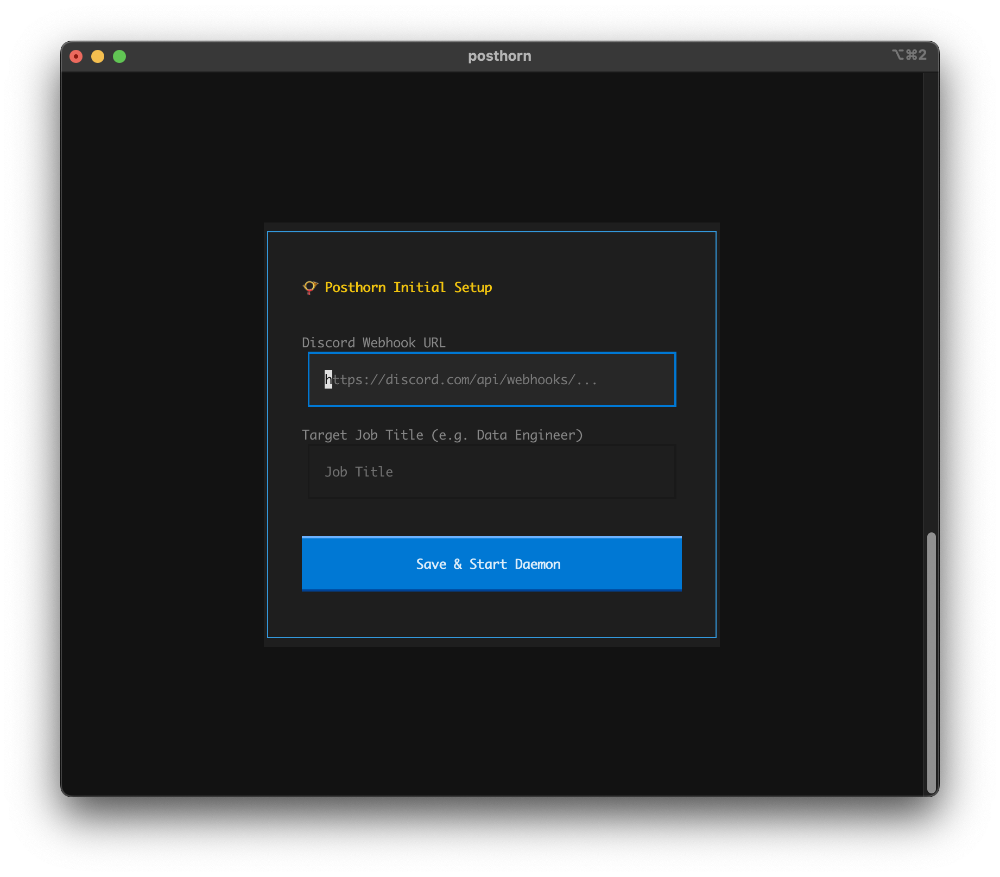

Posthorn
Find a damn job like a boss!
What is it?
Posthorn is an asyncronous background service designed to scan job boards, filter for specific keyword campaigns, and push early-warning alerts to Discord (more options on the way). Stop wasting time scrolling job postings only to be the 300th applicant... get alerted, be first, get that damn job! Built ontop of a lightweight local DuckDB state machine, Posthorn guarantees that a matched job is alerted on exactly once, even across overlapping sweeps or network failures.
Posthorn provides a Terminal User Interface (TUI) to manage the daemon and configure keyword campaigns on the fly.


How to install this glorious app?
Run the setup command inside your system's terminal for your computer's OS (MacOS, Windows, Linux). Copy and paste the command, then press Enter.
Open Terminal.app
Open PowerShell (search in Start menu)
1. Install Posthorn Daemon & TUI Manager
macOS & Linux:
curl -LsSf https://duckjobs.dev/install.sh | shWindows (PowerShell):
powershell -ExecutionPolicy ByPass -c "irm https://duckjobs.dev/install.ps1 | iex"2. First-Time Setup
Launch the app directly from your terminal:
posthornOn first launch, Posthorn opens a secure setup wizard in your terminal. Enter your Discord Webhook URL and your initial target job title. Once saved, the daemon immediately starts sweeping job boards and routing matches to your notification channel.
If you receive an error that "Posthorn is not found", or something like, try restarting your Terminal/Powershell app and rerun step 2.
Setting up Discord Alerts
Posthorn uses Webhooks to instantly push job matches directly to your phone or desktop. Here is how to configure a private Discord server in under two minutes.
1. Get Discord
If you don't already have it, download and install Discord, and create a free account.
2. Create a Private Server
Click the green + icon on the far left sidebar to Add a Server. Select Create My Own, then For me and my friends. Name it something like "Job Alerts" and click Create.
3. Create a Dedicated Channel
Click the + next to Text Channels to create a new channel named #posthorn.
Optimal Setting: Right-click the new channel, select Notification Settings, and change it to All Messages so your phone actually rings when a job drops.
4. Generate the Webhook URL
Right-click your #posthorn channel and select Edit Channel. Navigate to Integrations > Webhooks > New Webhook. Name the bot "Posthorn", click Copy Webhook URL, and hit Save.

Operator's Manual
Once the dashboard is running, you can manage the daemon using the following hotkeys:
c )s )Maintenance
If you ever want to wipe your job discovery history and start fresh without losing your configuration, stop the app (q) and run the developer reset command:
posthorn --dev-reset